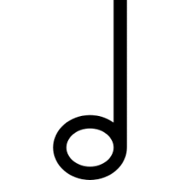

The piano was invented around the 1700. It was inveted by an Italian harpsichord maker, Bartolomeo
Cristofori. It
was originally called the gravicembalo col piano e forte which then became the piano. This was made so as to
grant
the musician a greater dynamic range by using hammers instead of quills. Over the course of history, there
have been
many famous composers. Examples of who there are below.

Mozart
Wolfgang Amadeus Mozort, known as Mozart, was an Austrian composer, instumentalist and music teacher
duing the Classical period. he was born in Slzbrug in 1756 and passed away in 1791. A few of his famous
pieces are Rondo in A minor, K. 511, Sonata No.16 in C major, K. 545 and the piece here, Sonata No. 11
in A major, K.331, 3rd movement.
Bach
Johann Sebastian Bach, known as Bach, was a German composer and musician during the Baroque period. He
was born in 1685 and passed away in the 1750. A few if his famous pieces are the Goldberg variations,
BWV 988, which is a set of variations based on a simple aria, Italian Concerto, BWV 971, which is a
vibrant and energetic piece that showcases Bach's mastry of concerto form, and The Well-Tempered
Clavier, Book 1, BWV 846-869, which contains one of the pieces you see here.
Chopin
Frederic Chopin, known as Chopin, was a Polish composer and virtuoso pianist during the Romantic era. He
was born in 1810 and passed away in 1849. A few of his famous pieces are the Fantaisie-Impromptu in
C-sharp minor,OP. 66, the Revolutionary Etude, Op.10 No. 12 and the Nocturne in E-flat major, Op. 9 No.
2, which is shown here.
beethoven
Ludwig van Beethoven, known as Beethoven, was German composer for western music during the Classical and
Romantic eras. He was born in 1770 and passed away in 1827. A few of his famous pieces are Pathetique
Sonata, Fur Elise and the Moonlight Sonata as shown here.
There are many terms in piano that were invented in piano. These terms mean different things to take
note of when playing the piano.
Here are the basic terms to know about playing the piano.
Quaver
A quaver is also know as a eighth note. It is played over half a beat.
crotchet
A crotchet is also know as a quater note. It is played over a single beat.

Minim
A Minim is also know as a half note. It is played over two beats.
Semibreive
A semibreive is also know as a whole note. It is played over four beat.

Piano
Piano is where the player has to play the section at a soft volume.
Mezzo piano
Mezzo piano is where the player has to play the section at a moderately soft volume.
Mezzo forte
Mezzo forte is where the player has to play the section at a moderately loud volume.
Forte
Forte is where the player has to play the section at a loud volume.
There are a variety of piano pieces composed. Each piece has it's own unique parts. When playing the piano,
time is crucial as it tells the player how long each note has to be played for.
Piano minigame
1
2
3
4
5
6
7
8
9
10
11
12
13
14